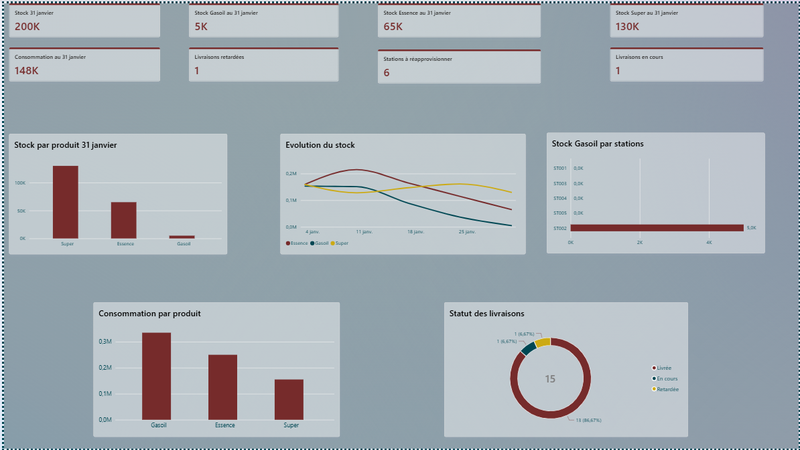

Analyses approfondies, modélisations S&OP, gestion des ruptures et tableaux de bord décisionnels.
Downstream Oil Analytics
MF Energy : Distribution Pétrolière & Gestion des Stocks
Projet de démonstration appliqué à l'optimisation du réapprovisionnement et au maintien des niveaux de stock d'un réseau de stations-service (Janvier 2026).
📌 Contexte & Problématique Métier
MF Energy gère un réseau de distribution de carburants. Face à des risques récurrents de ruptures de stock sur le Gasoil et le Super, l'entreprise devait identifier rapidement les stations critiques, évaluer la performance des transporteurs et ajuster la fréquence des livraisons.
🛠️ Approche d'Analyse de Données
- Préparation sous Excel : Structuration initiale et nettoyage des données opérationnelles[cite: 1].
- Transformation Power Query : Importation et modélisation de 4 jeux de données clés (Stations, Stocks, Consommations quotidiennes, Livraisons)[cite: 1].
- Dashboard Power BI : Restitution visuelle sous forme de tableau de bord interactif pour faciliter la prise de décision rapide[cite: 1].
📈 Aperçu du Dashboard Power BI

🔍 Enseignements Clés (Key Findings)
- Forte tension sur le Gasoil : Le Gasoil représente le volume consommé le plus élevé (335 000 L), soit **+34 % de consommation par rapport à l'Essence**[cite: 1].
- Goulots d'étranglement logistiques : Deux stations clés, **ST004 et ST005**, concentrent l'essentiel des retards de livraison enregistrés sur le Gasoil[cite: 1].
- Point d'alerte critique : La station **ST001 (Dakar)** présente une double alerte simultanée sur le Gasoil et l'Essence, nécessitant un réapprovisionnement d'urgence immédiat[cite: 1].
- Limites de l'étude : L'analyse repose sur un diagnostic instantané (photographie à un instant T)[cite: 1]. Une évolution idéale intégrera des indicateurs dynamiques de taux de rotation des stocks et de jours de couverture prévisionnelle[cite: 1].
📊 Télécharger le Modèle Power BI (.pbix)
Demand Planning & S&OP
Demand Planning : Energy Protein
Analyse stratégique et élaboration d'un plan de production suite à un pic inattendu de la demande globale.
📌 Contexte du Cas Pratique
Energy Protein est une entreprise spécialisée dans les boissons énergétiques protéinées[cite: 1]. Elle écoule ses produits historiques (**Vanille** et **Chocolat**) chez deux distributeurs : **Auchan** (volume majeur) et **Casino**[cite: 1].
L'entreprise introduit une nouvelle saveur, **Fraise**, testée en quantité limitée chez Auchan Mermoz[cite: 1]. Suite à la recommandation spontanée d'une influenceuse sur les réseaux sociaux, le produit devient immédiatement viral[cite: 1]. Les stocks chez Auchan s'épuisent en quelques heures[cite: 1]. Face à cet engouement, Auchan passe une commande ferme d'urgence de **1 000 unités**, tandis que Casino sollicite **100 unités**[cite: 1].
🎯 Contraintes Opérationnelles Industrielles
- Capacité de production plafonnée : Limite industrielle stricte fixée à **900 unités / mois**[cite: 1].
- Stock de sécurité : Maintien obligatoire d'une réserve égale à **20 % de la demande prévisionnelle**[cite: 1].
- Historique & Commandes : Arbitrage entre la tendance des saveurs établies et les nouvelles commandes fermes (1 100 unités au total)[cite: 1].
📊 Scénarisation S&OP & Prévisions de Production
Synthèse du plan d'ajustement élaboré pour lisser la production sur 3 mois tout en respectant la limite usine et la sécurisation des clients :
| Période |
Saveur Fraise (Forecast) |
Production Totale |
Contrainte Capacité |
Stock de Sécurité (20%) |
| Mois M+1 |
450 unités |
850 unités |
✅ Conforme (≤ 900) |
170 unités[cite: 1] |
| Mois M+2 |
500 unités |
900 unités |
✅ Capacité Max Atteinte |
180 unités[cite: 1] |
| Mois M+3 |
380 unités (Stabilisation) |
780 unités |
✅ Conforme (≤ 900) |
156 unités[cite: 1] |
🔍 Risques & Recommandations Stratégiques
- Risque principal d'Effet de Hype : Risque de sur-réaction face à un pic viral temporaire sur les réseaux sociaux qui pourrait retomber brusquement à M+3[cite: 1].
- Échelonnement des livraisons : Négociation avec Auchan pour lisser la livraison des 1 000 unités sur 2 mois afin de ne pas pénaliser les approvisionnements de Casino[cite: 1].
- Plafonnement capacitaire : Maintien de la capacité actuelle à 900 un/mois sans investissement lourd précipité, en observant les ré-achats réels après le pic initial[cite: 1].
📈 Consulter le Modèle Excel de Prévision (Google Sheets) →